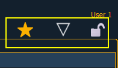

There are three icons located above the CIA.

You can select a favorite default display for the CIA that will show when [Displays] is pressed. The standard default display for the CIA is the Browser.
The favorite display will show a gold star icon at the top of the CIA by the arrow and lock icons. Displays that can be selected as a favorite, but are currently not, will show a gray star at the top of the CIA. Click on the gray star to make that display your favorite. That display will now be the new default display for the CIA. Displays that show up in the CIA but cannot be the default display will not show the star icon.
It is possible to collapse the CIA from view. To do this, you can click the arrow icon above the CIA. The CIA will collapse from view, exposing a larger viewing area of whatever display is visible above the CIA. The arrow will move to the bottom of the screen.
To expand the CIA into view again, click the arrow at the bottom of the screen. The CIA will reopen.
You can lock the CIA in place to prevent it from being collapsed or viewed.
To lock the CIA, click on the lock above the browser. The lock will “lock”.
To unlock the CIA, click the sunken lock again.
Note: While locked, the CIA can still be collapsed or expanded by clicking the arrow icon. You can also use [Displays] & [Page ▲] to expand or [Displays] & [Page ▼] to collapse.